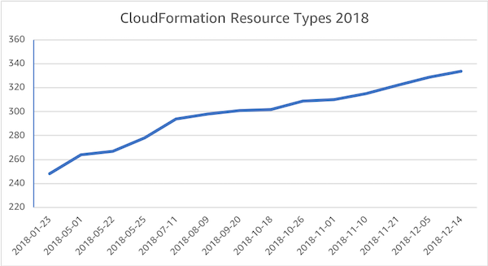

Why LambdaSharp?
AWS CloudFormation has been around since 2010, but with the advent of serverless, it has really taken off. In 2018 alone, almost a 100 new services have been added to it. This number is likely to be dwarfed in 2019.

However, despite the rise in popularity of CloudFormation, the syntax has not improved and the developer tooling is still cumbersome. As a developer, I found it particularly frustrating that simple concepts like variables are absent and that there is no assistance in detecting preventable errors.
As a result, I created LambdaSharp (λ#). LambdaSharp is a suite to tools to make building serverless .NET application much easier. For example, the LambdaSharp CLI compiles all associated code, uploads the generated artifacts, and deploys a CloudFormation stack in a single command.
CloudFormation is an amazing technology for describing infrastructure and managing deployments. However, it is not developer-friendly. That is where LambdaSharp comes in. You get all the benefits of CloudFormation without many of its sharp edges.
New Syntax
Among my many grievances with CloudFormation was the stiff organization of the template file. Every definition type is confined to its own section. This design makes it impossible to co-locate related definitions. It also forces every new concept to introduce a new section.
AWSTemplateFormatVersion: 2010-09-09
Parameters:
(set of parameters)
Mappings:
(set of mappings)
Conditions:
(set of conditions)
Resources:
(set of resources)
Outputs:
(set of outputs)
The new format is also YAML-based, but it allows for a free-form organization of definitions similar to what developers enjoy in modern languages. In addition, modules--CloudFormation templates in LambdaSharp--have a name and a version to detect unintentional CloudFormation stack updates with the wrong module or an older version.
Module: My.Module
Version: 1.0-Dev
Items:
- (list of definitions)
Definitions are identified by a keyword before their identifier (e.g. Resource:, Mapping:, Condition:, etc.). Additionally, definitions can be grouped to further organize them effectively.
- Resource: MyResource
Type: AWS::SNS::Topic
Properties:
DisplayName: MyTopic
- Group: Accounting
Items:
- Resource: Bucket
Type: AWS::S3::Bucket
More importantly, though, it allows for new concepts, such as variables, to be added without having to confine them to a new section.
Variables
Variables make it possible to reuse values in multiple places. These values can be hard-coded, like constants, or dynamic expressions based on parameters or resource attributes. Like parameters, variables can have a type, which is String when omitted. During compilation, variables are resolved and inlined were referenced.
- Variable: MyVariable
Value: !Sub "Hello ${Greeting}"
Encrypted Values
Another recurring headache is encrypted values. The problem is relatively easy to solve for Lambda functions, which can decrypt them during cold start, but not for resources.
The solution is to embed a custom resource that decrypts values of type Secret. The output of the custom resource is obtained by appending the ::Plaintext suffix to the name of the encrypted parameter or variable.
- Variable: SecretValue
Type: Secret
Value: AQICAH...rWI/sbo0d1oDVT2ccGj8=
- Resource: MyResource
Type: AWS::SNS::Topic
Properties:
DisplayName: !Ref SecretValue::Plaintext
For the curious, the custom resource is optimized away during compilation if the plain text value is not needed by a resource, resulting in no additional overhead unless needed.
Validation of Resource Properties and Attributes
The LambdaSharp compiler does more than adding some much requested features to CloudFormation. It also detects common errors, such as missing or misspelled resource properties and attributes, circular variable dependencies, misconfigured function entry points in the Lambda projects, and so on. The more errors detected early, the better! For example, compiling a module with the following definition:
- Resource: WebsiteBucket
Type: AWS::S3::Bucket
Properties:
WebsitConfiguration:
ErrorDocument: error/index.html
IndexDocument: index.html
Results with an error when built:
$ lash build
LambdaSharp CLI (v0.7.0) - Build LambdaSharp module
Compiling module: Module.yml
FAILED: 1 errors encountered
ERROR: unrecognized property 'WebsitConfiguration' @ Items/WebsiteBucket [C:\LambdaSharp\StaticWebsite\Module.yml]
Validation of Custom Resource Types
One of my favorite additions to CloudFormation is support for custom resource types, including declaring their properties and attributes. Custom resource types are validated just like regular AWS-native types.
- ResourceType: My::Custom::Resource
Handler: ResourceHandler
Properties:
- Name: SourceFile
Type: String
Attributes:
- Name: ResultValue
Type: String
Using a custom resource type in LambdaSharp is as simple as referencing its module in the Using section and then creating resources with it.
- Resource: MyResource
Type: My::Custom::Resource
Properties:
Source: !Ref MySourceParameter
During the build phase, the compiler embeds additional metadata about custom resource types inside the CloudFormation template, which is then fetched when a reference to a module if found. All this is done seamlessly without any additional overhead to the developer.
And so much more…
There are many more features that LambdaSharp provides today, such as a constructor/destructor for CloudFormation stacks, local file uploads, interactive deployments, cross-module references, CloudWatch Log aggregation, etc. but they will have to go into a follow-on article.
Check It Out
The LambdaSharp syntax is documented and numerous examples are provided. Installation is trivial as well.
Future Work
CloudFormation provides a rich set of mechanisms to create repeatable infrastructure at scale. However, CloudFormation as a language is not suitable for quick development cycles.
LambdaSharp offers a glimpse of what kind of tooling can be created on top of CloudFormation and there is much more that can be done:
- Determine what regions a module is compatible with, based on AWS native and LambdaSharp referenced modules.
- Validate all possible permutations for modules with conditional resources and create the appropriate IAM roles.
- Type system for CloudFormation stack interoperability.
- Federation and discoverability of LambdaSharp module repositories.
- Optimize shared assembly references in pre-jitted Lambda Layers to reduce module size and cold-start times.
- Ability to define and share event sources for Lambda functions through modules.
- Enhance the active deployment tier for observability and reliability of serverless applications.
- And so on…
If you are up for the challenge, check out the LambdaSharp GitHub repository or reach out to me at @lambdasharp. If not, enjoy what LambdaSharp can do for you today and keep an eye out for future enhancements!